La electrónica digital es la rama de la electrónica que trabaja con señales que solo pueden tomar un número finito de valores discretos, normalmente dos: 0 (tensión baja, falso) y 1 (tensión alta, verdadero). Se usa en prácticamente todos los sistemas tecnológicos modernos: ordenadores, teléfonos, controladores industriales, comunicaciones, etc.
Señales continuas que pueden tomar infinitos valores dentro de un rango (ej: tensión de 0 a 5 V con todos los valores intermedios).
Ej: amplificadores de audio, sensores de temperatura.
Señales discretas que solo toman dos valores: 0 y 1. Mayor inmunidad al ruido, facilidad de diseño y procesamiento lógico.
Ej: microprocesadores, memorias, puertas lógicas.
En un circuito digital real los valores 0 y 1 se representan mediante niveles de tensión eléctrica:
| Nivel lógico | Tensión aproximada | Denominación |
|---|---|---|
| 0 | 0 V | Tensión baja (LOW) |
| 1 | 5 V | Tensión alta (HIGH) |
La salida depende solo de las entradas actuales. No tienen memoria. Son los que estudia este bloque.
Ej: sumadores, decodificadores, multiplexores, puertas lógicas.
La salida depende de las entradas actuales y del estado anterior. Tienen memoria.
Ej: contadores, registros de desplazamiento, flip-flops, biestables. No aparecen como problema central, pero los conceptos pueden aparecer en enunciados contextualizados (Orientaciones PEvAU 2025-26).
Un sistema de numeración es un conjunto de símbolos y reglas para representar cantidades.
| Sistema | Base | Dígitos | Ejemplo |
|---|---|---|---|
| Decimal | 10 | 0–9 | 25₁₀ |
| Binario | 2 | 0, 1 | 11001₂ |
| Octal | 8 | 0–7 | 31₈ |
| Hexadecimal | 16 | 0–9, A–F | F3₁₆ |
| Decimal | Binario | Octal | Hexadecimal |
|---|---|---|---|
| 0 | 0000 | 0 | 0 |
| 1 | 0001 | 1 | 1 |
| 2 | 0010 | 2 | 2 |
| 3 | 0011 | 3 | 3 |
| 4 | 0100 | 4 | 4 |
| 5 | 0101 | 5 | 5 |
| 6 | 0110 | 6 | 6 |
| 7 | 0111 | 7 | 7 |
| 8 | 1000 | 10 | 8 |
| 9 | 1001 | 11 | 9 |
| 10 | 1010 | 12 | A |
| 11 | 1011 | 13 | B |
| 12 | 1100 | 14 | C |
| 13 | 1101 | 15 | D |
| 14 | 1110 | 16 | E |
| 15 | 1111 | 17 | F |
Decimal → Binario: Convertir 25₁₀ a binario.
| División | Cociente | Resto |
|---|---|---|
| 25 ÷ 2 | 12 | 1 |
| 12 ÷ 2 | 6 | 0 |
| 6 ÷ 2 | 3 | 0 |
| 3 ÷ 2 | 1 | 1 |
| 1 ÷ 2 | 0 | 1 |
↑ Leer restos de abajo hacia arriba → 25₁₀ = 11001₂
Binario → Decimal: Convertir 11001₂ a decimal.
Decimal → Hexadecimal: Convertir 243₁₀ a hexadecimal.
| División | Cociente | Resto |
|---|---|---|
| 243 ÷ 16 | 15 | 3 |
| 15 ÷ 16 | 0 | 15 = F |
↑ Leer restos de abajo hacia arriba → 243₁₀ = F3₁₆
Hexadecimal → Decimal: Convertir F3₁₆ a decimal.
Binario → Octal: agrupar de 3 en 3 desde la derecha.
Binario → Hexadecimal: agrupar de 4 en 4 desde la derecha.
Suma: 1011₂ + 0110₂ = 10001₂ (11+6=17)
Resta: 1011₂ − 0110₂ = 0101₂ (11−6=5)
Multiplicación: 101₂ × 011₂ = 01111₂ (5×3=15)
División: 1111₂ ÷ 011₂ = 101₂ (15÷3=5)
25₁₀ en BCD = 0010 0101 (el 2 → 0010, el 5 → 0101, cada dígito por separado).
25₁₀ en binario puro = 11001 (valor global del número).
⚠ Son representaciones distintas. BCD usa más bits pero simplifica la conversión con displays decimales.
| Decimal | Binario | Gray |
|---|---|---|
| 0 | 000 | 000 |
| 1 | 001 | 001 |
| 2 | 010 | 011 |
| 3 | 011 | 010 |
| 4 | 100 | 110 |
| 5 | 101 | 111 |
| 6 | 110 | 101 |
| 7 | 111 | 100 |
1 bit: 0, 1
2 bits: reflejar (0,1 → 1,0) y añadir prefijo → 00, 01, 11, 10
3 bits: reflejar (00,01,11,10 → 10,11,01,00) y añadir prefijo → 000, 001, 011, 010, 110, 111, 101, 100
Comprueba en la tabla: cada fila consecutiva difiere en exactamente 1 bit.
Cada dígito del sistema binario se denomina bit (binary digit). Un conjunto de 8 bits forma un byte.
| Unidad | Equivalencia |
|---|---|
| 1 Byte (B) | 8 bits |
| 1 Kilobyte (KB) | 1024 B |
| 1 Megabyte (MB) | 1024 KB |
| 1 Gigabyte (GB) | 1024 MB |
| 1 Terabyte (TB) | 1024 GB |
El código BCD se usa en displays de 7 segmentos. Un circuito decodificador BCD→7 segmentos recibe 4 bits BCD y activa los segmentos necesarios para mostrar el dígito correspondiente.
| Dígito | Código BCD | Segmentos activos |
|---|---|---|
| 0 | 0000 | a, b, c, d, e, f |
| 1 | 0001 | b, c |
| 2 | 0010 | a, b, d, e, g |
| 5 | 0101 | a, c, d, f, g |
| 9 | 1001 | a, b, c, d, f, g |
Los 7 segmentos se nombran a–g. El decodificador implementa esta lógica con puertas combinacionales.
Con un número fijo de bits, el resultado de una operación puede no caber. El bit de acarreo sobrante se pierde y el resultado es incorrecto.
Dos normas de simbología: ANSI/IEEE (formas redondeadas) y DIN/IEC 60617 (rectángulos con etiqueta). Ambas normas pueden aparecer en los enunciados.
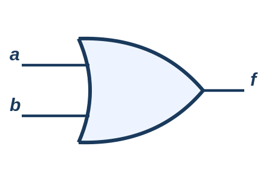
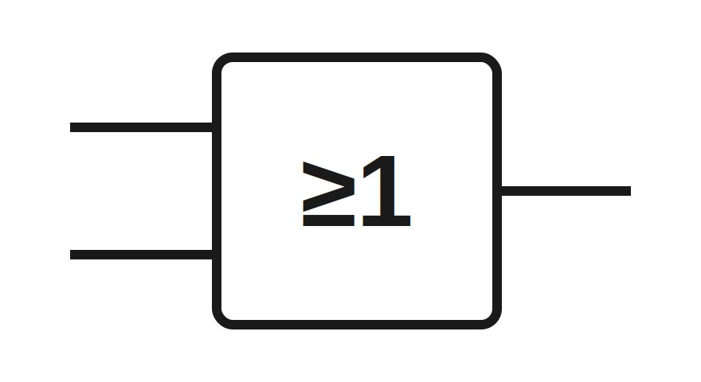
| a | b | f = a+b |
|---|---|---|
| 0 | 0 | 0 |
| 0 | 1 | 1 |
| 1 | 0 | 1 |
| 1 | 1 | 1 |
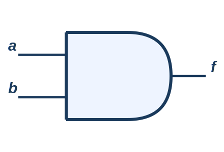
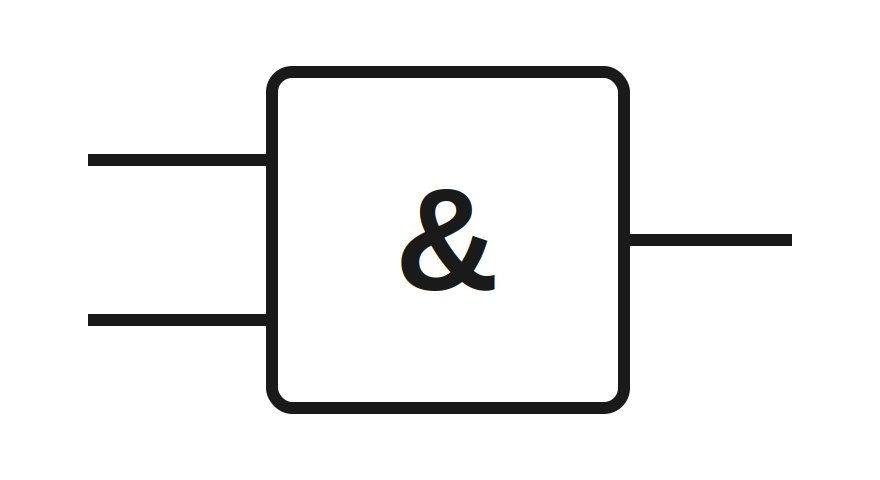
| a | b | f = a·b |
|---|---|---|
| 0 | 0 | 0 |
| 0 | 1 | 0 |
| 1 | 0 | 0 |
| 1 | 1 | 1 |
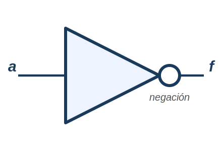
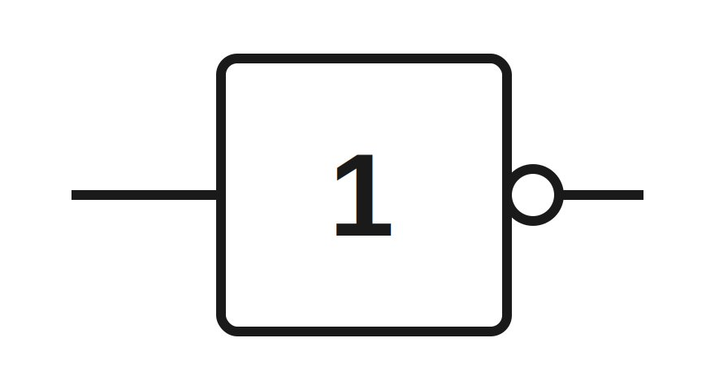
| a | f = ā |
|---|---|
| 0 | 1 |
| 1 | 0 |
Una puerta universal permite implementar cualquier función lógica usando únicamente ese tipo de puerta.
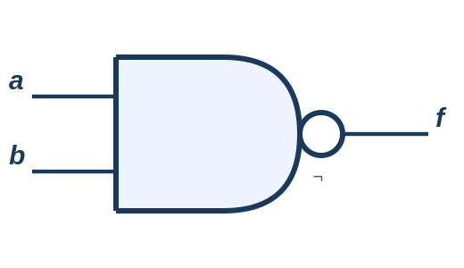
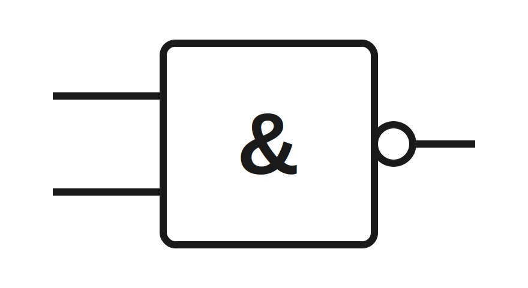
Salida 0 solo cuando TODAS las entradas son 1.
| a | b | f = (a·b)̄ |
|---|---|---|
| 0 | 0 | 1 |
| 0 | 1 | 1 |
| 1 | 0 | 1 |
| 1 | 1 | 0 |
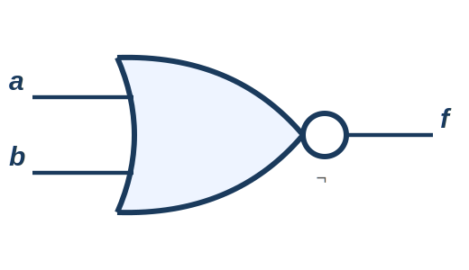
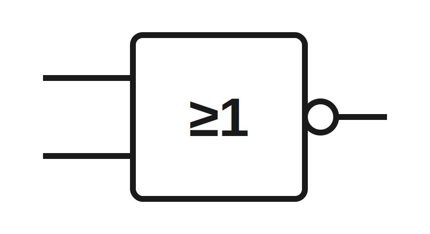
Salida 1 solo cuando TODAS las entradas son 0.
| a | b | f = (a+b)̄ |
|---|---|---|
| 0 | 0 | 1 |
| 0 | 1 | 0 |
| 1 | 0 | 0 |
| 1 | 1 | 0 |
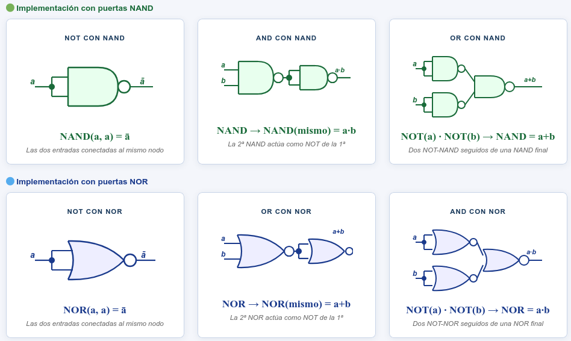
| Propiedad | Suma (+) | Producto (·) |
|---|---|---|
| Conmutativa | a+b = b+a | a·b = b·a |
| Asociativa | a+(b+c) = (a+b)+c | a(bc) = (ab)c |
| Distributiva | a+(bc) = (a+b)(a+c) | a(b+c) = ab+ac |
| Elem. neutro | a+0 = a | a·1 = a |
| Elem. absorbente | a+1 = 1 | a·0 = 0 |
| Idempotencia | a+a = a | a·a = a |
| Complementariedad | a+ā = 1 | a·ā = 0 |
| Absorción | a+ab = a | a(a+b) = a |
| Involución | doble negación: ā̄ = a | |
La negación de una suma es igual al producto de las negaciones.
La negación de un producto es igual a la suma de las negaciones.
Simplificar f = a + ab
f = a + ab = a (propiedad de absorción: a + ab = a)
Simplificar f = ab + ab
f = ab + ab = a(b + b) = a · 1 = a
Factor común a · complementariedad b + b = 1 · elemento neutro.
Simplificar f = a · b
f = a · b = a + b = a + b
2ª ley de De Morgan · involución (doble negación = variable original).
Simplificar f = ab + ab + ab
f = a(b + b) + ab = a · 1 + ab = a + ab = a + b
Factor común · complementariedad · absorción: a + ab = a + b.
Cada minitérmino: producto de TODAS las variables. Variable sin negar si vale 1; negada si vale 0.
Cada maxitérmino: suma de TODAS las variables. Variable sin negar si vale 0; negada si vale 1.
Si una expresión no contiene todas las variables, se expande multiplicando por (x + x̄) = 1, que introduce la variable sin alterar la función.
f(a,b,c) = bc (falta a) → f = bc·(a+ā) = abc + ābc → Σm(3,7)
f(a,b,c,d) = bd (faltan a y c) → multiplicar por (a+ā) y por (c+c̄):
f = bd·(a+ā)·(c+c̄) = abcd + abc̄d + ābcd + ābc̄d → Σm(5, 7, 13, 15)
Método estándar de simplificación. Las celdas adyacentes difieren en 1 solo bit (código Gray). Al agrupar 2k celdas se eliminan k variables.
| ab | 0 | 1 |
|---|---|---|
| 0 | 0 | 2 |
| 1 | 1 | 3 |
| abc | 00 | 01 | 11 | 10 |
|---|---|---|---|---|
| 0 | 0 | 2 | 6 | 4 |
| 1 | 1 | 3 | 7 | 5 |
| abcd | 00 | 01 | 11 | 10 |
|---|---|---|---|---|
| 00 | 0 | 4 | 12 | 8 |
| 01 | 1 | 5 | 13 | 9 |
| 11 | 3 | 7 | 15 | 11 |
| 10 | 2 | 6 | 14 | 10 |
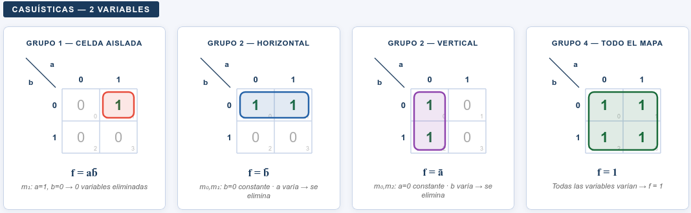
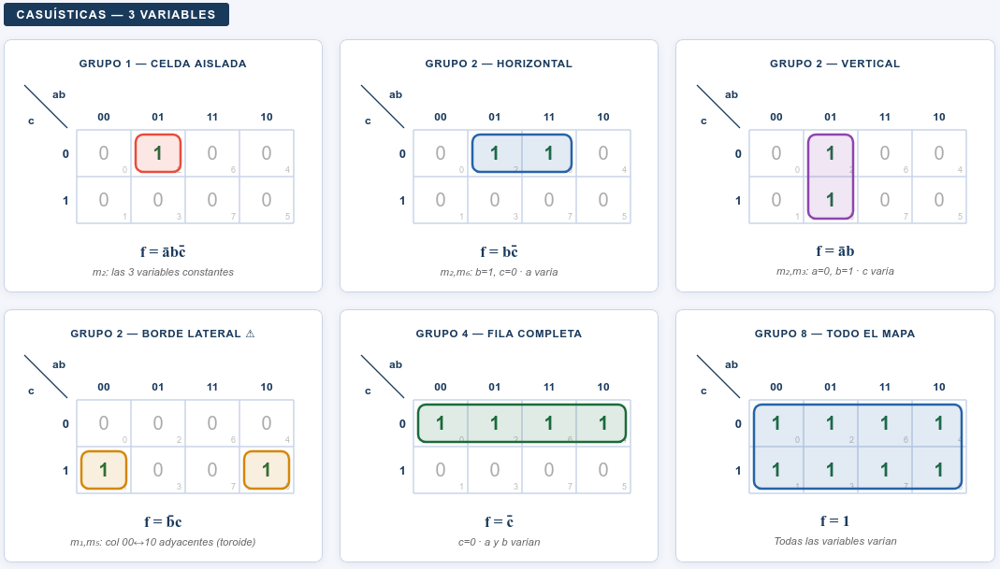
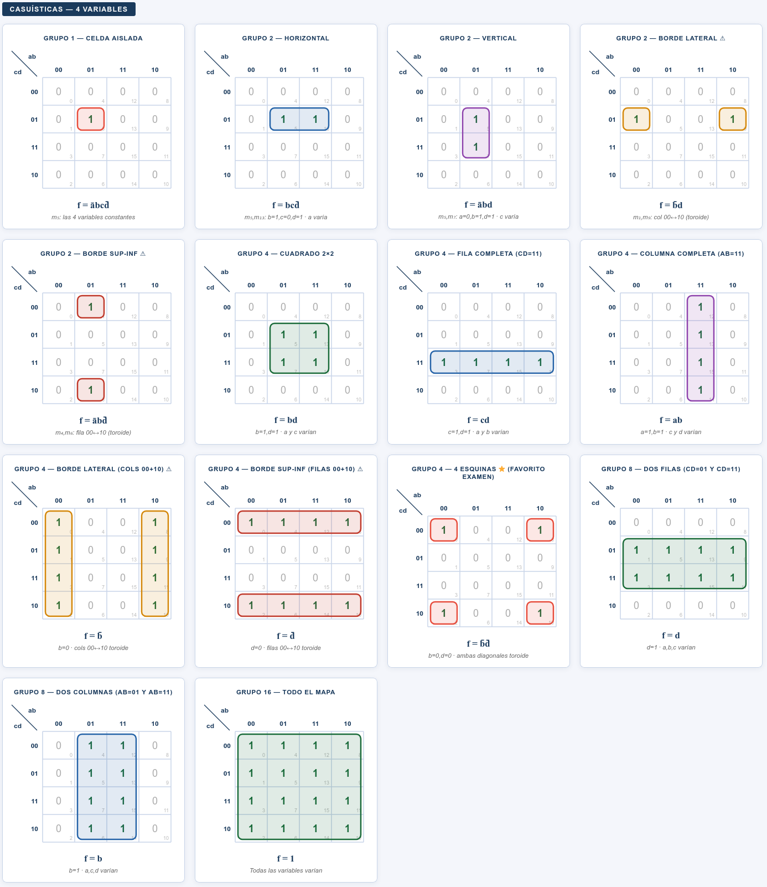
Combinaciones que nunca ocurrirán. Se pueden incluir en grupos para ampliarlos. No es obligatorio cubrirlos.
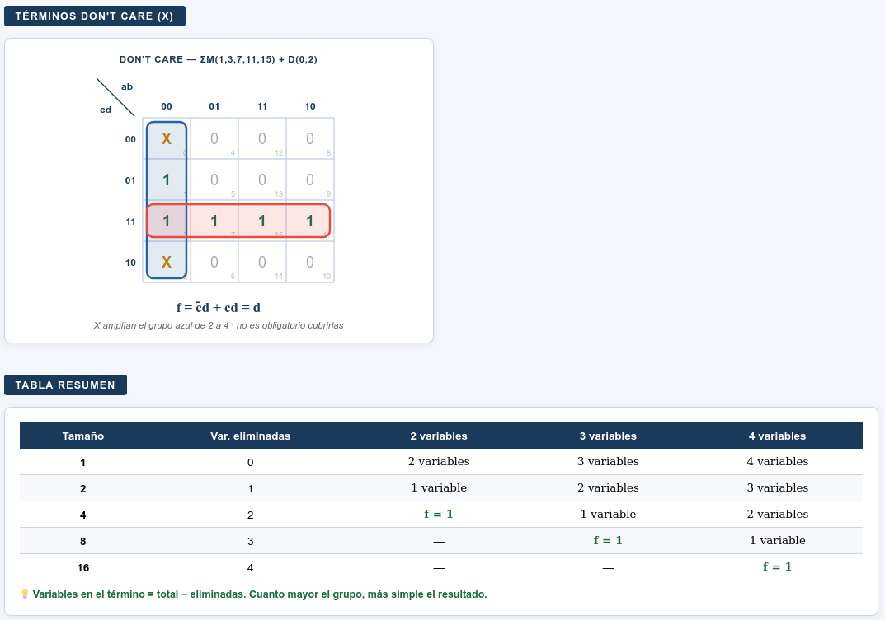
| ab \ c | c=0 | c=1 |
|---|---|---|
| 00 | 0 | 0 |
| 01 | 0 | 1 (m₃) |
| 11 | 1 (m₆) | 1 (m₇) |
| 10 | 0 | 1 (m₅) |
El análisis consiste en obtener la expresión booleana y la tabla de verdad a partir del diagrama de puertas. Se recorre el circuito de izquierda a derecha:
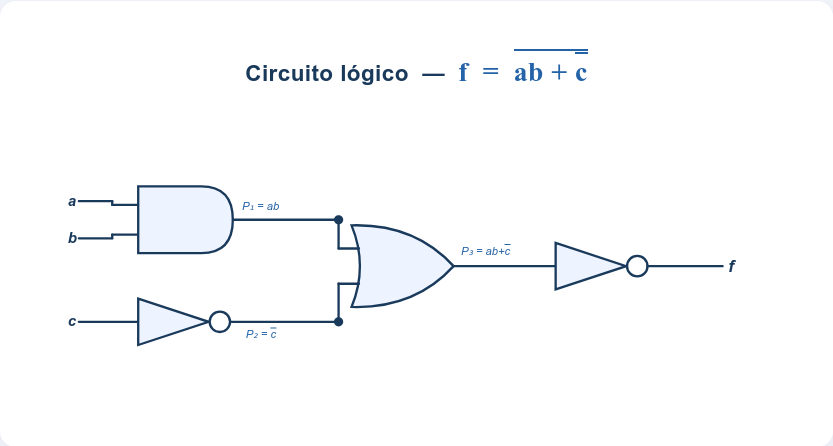
Una puerta AND por cada producto + una puerta OR final.
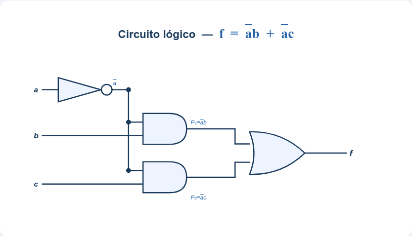
Cualquier función en forma SOP puede implementarse con solo puertas NAND. El truco se basa en aplicar doble negación y luego la ley de De Morgan, convirtiendo cada AND en NAND y la OR final en otra NAND.
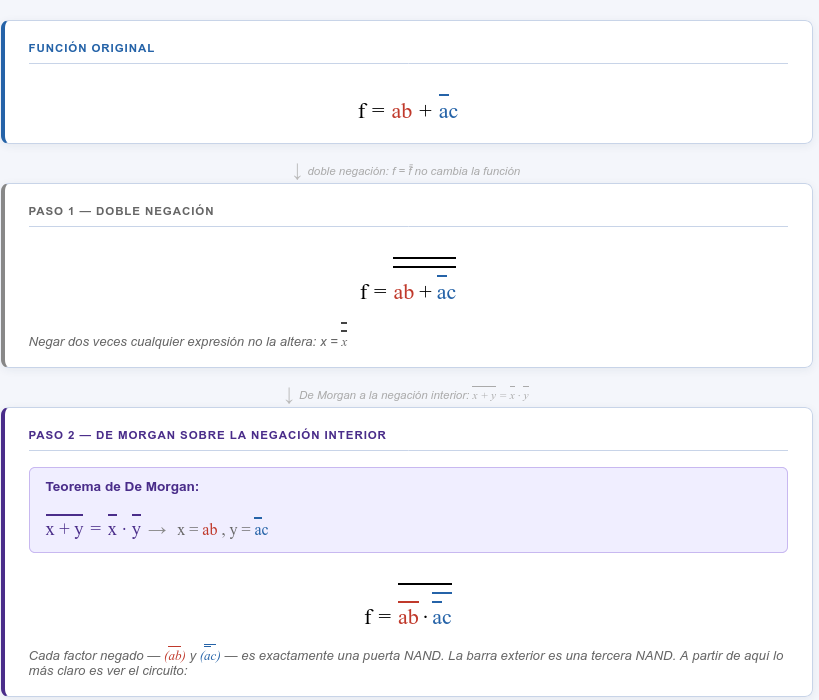
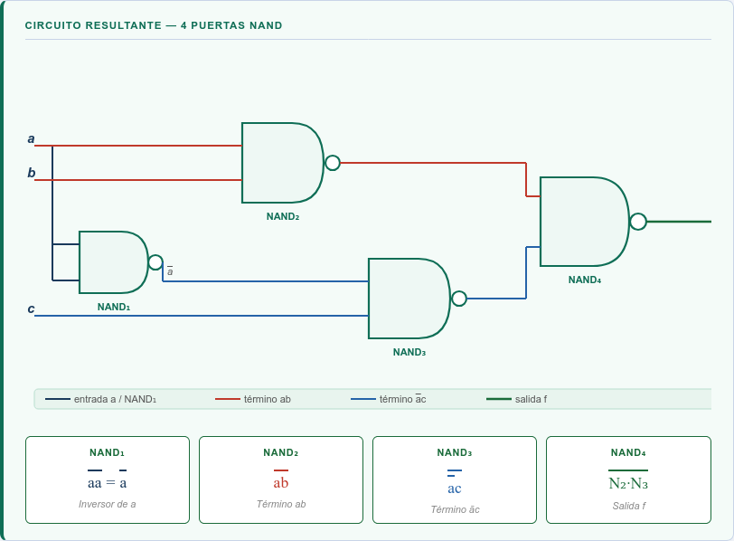
De forma completamente simétrica, cualquier función en forma POS puede implementarse con solo puertas NOR. Se aplica doble negación y De Morgan, convirtiendo cada OR en NOR y la AND final en otra NOR.
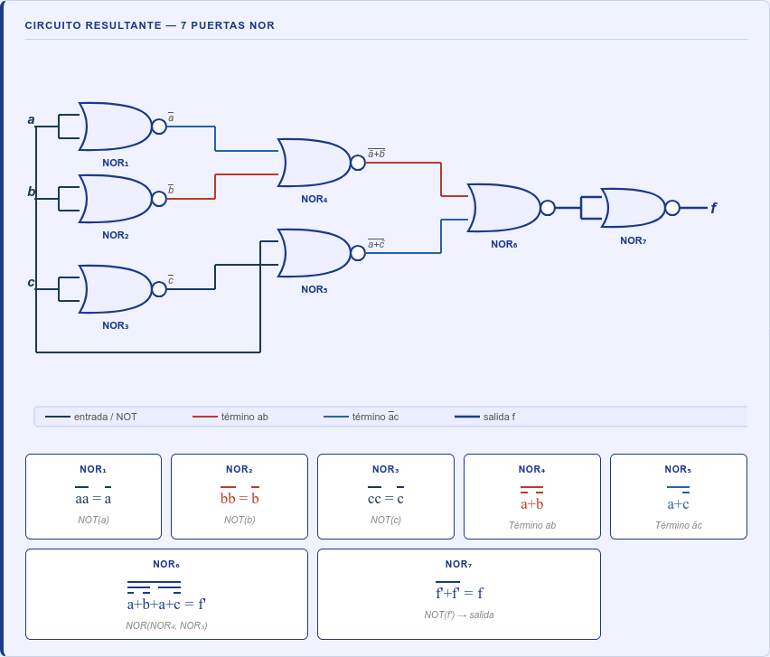
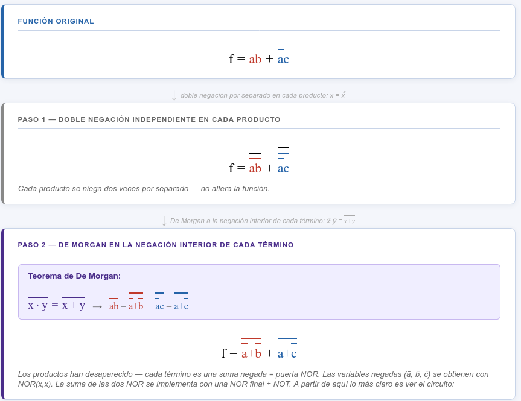
| Error habitual | Corrección |
|---|---|
| Agrupar 3, 6 o 12 celdas | Los grupos deben tener 1, 2, 4, 8... celdas |
| Olvidar que los bordes son adyacentes | El mapa se interpreta como si se cerrara sobre sí mismo |
| Cambiar el orden Gray | Solo cambia una variable entre columnas/filas vecinas |
| No usar grupos máximos | Los grupos grandes simplifican más variables |
Modelo cerrado de resolución para consolidar tabla, mapa, simplificación e implementación.
| Fallo típico | Cómo detectarlo |
|---|---|
| Ordenar columnas 00, 01, 10, 11 | El orden correcto Gray es 00, 01, 11, 10. |
| Agrupar 3 casillas | Los grupos son de 1, 2, 4, 8... |
| No usar bordes adyacentes | El mapa se comporta como si se cerrara por los bordes. |
| Escribir una variable que cambia dentro del grupo | Solo permanecen las variables constantes. |
5 preguntas tipo PAU. Pulsa la opción que consideres correcta y se mostrará la respuesta.
1. La función NAND devuelve "0" solo cuando:
2. En un mapa de Karnaugh los grupos válidos tienen tamaño:
3. Una función de N variables tiene una tabla de verdad de:
4. Para implementar cualquier función con sólo NAND se basa en que:
5. La forma canónica como suma de minterms es:
El cierre del bloque asegura que cada problema pueda recorrerse sin saltos desde el enunciado hasta la implementación.
| Error | Revisión |
|---|---|
| Cambiar el orden Gray | Comprobar que columnas/filas cambian una sola variable. |
| Grupos pequeños innecesarios | Buscar primero grupos máximos. |
| No usar los bordes | Recordar que el mapa es cíclico. |
| Variable que cambia dentro del grupo | Eliminarla del término resultante. |